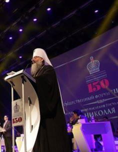

Les festivités du centenaire de la mort de la famille impériale ont officiellement débuté en Russie !
Le 25 juillet 1918, à la tête de ses régiments tsaristes, l’amiral en chef de la flotte de la mer noire, Alexandre Vassilievitch Koltchak, pénètre dans la ville d’Ekaterinbourg, vidée de ses bolcheviks. Il est trop tard ! On ne retrouvera nulle trace de la famille impériale, exécutée par leurs geôliers dans la nuit 8 jours auparavant. La destinée des derniers Romanov fascine toujours tant on ne compte plus les livres, films, documentaires consacrés à cette dynastie qui régna sur un empire durant plus de 3 siècles. Cette année, la Russie va célébrer le centenaire de l’exécution de Nicolas II et de sa famille. Tout un symbole pour ce qui fut un temps l’Union Soviétique.
100 000 personnes…C’est le chiffre annoncé du nombre de personnes attendues par les autorités épiscopales orthodoxes pour le centième anniversaire d’une tragédie qui a marqué le continent européen. Depuis chaque année, celui-ci ne cesse de croître tant la ferveur des russes pour leur famille impériale est profonde. Déclarée sainte en 2000, on annonce d’ores et déjà aussi la présence du patriarche de Moscou et de toute la Russie, Cyrille, des membres de la maison des Romanov ou encore du gouvernement pour ce qui a été officiellement baptisé, les « journées du Tsar ».
La procession a débuté dans le courant du mois de mai depuis la ville de Tolbosk. Aux drapeaux de l’ancienne monarchie se mêlent les icones représentants la sainte famille et les croix orthodoxes. A chaque arrêt, on prie à la mémoire de Nicolas II, son épouse Alexandra, d’Olga, Tatiana, Maria, Anastasia et d’Alexis, leurs enfants. Liturgies ou chants patriotiques, chaque génération est représentée dans cette procession qui se renforce à chaque halte. Dans la ville d’Ekatérinbourg, tout est déjà prétexte aux commémorations. Le 18 mai, c’est l’anniversaire de naissance de Nicolas II qui a été l’objet d’une manifestation. Les portraits du Tsar portés par des jeunes orthodoxes, cadets ou membres des corps de cosaques1, un discours prononcé par chef du département du diocèse local, Aleksey Leonidovich Soloviev, les a exhorté dans un vibrant discours aux accents nationalistes à « préserver les traditions du peuple russe et de ne pas devenir des traîtres, de respecter la mémoire et cette foi » qui fut celle du fils d’Alexandre III.
Patriotisme rime avec fidélité à la mémoire russe et nostalgie monarchique, le tout teinté d’un certain idéalisme. Ekaterinbourg « est devenue un symbole de la tragédie de la famille du tsar et, avec elle, notre patrie » a déclaré le métropolite Cyrille qui a inauguré le même jour un symposium organisé pour préserver l'héritage du tsar Nicolas II. Appelant chacun des participants à réfléchir sur ce que fut « l'Empire russe et quelle a été la grandeur de notre pays sous son règne, ce les russes devraient apprendre de ce passé afin d’en tirer les leçons de notre avenir », c’est l’intervention de Konstantin Malofeev qui a été remarquée par les 300 participants. Ce soutien au Kremlin, monarchiste reconnu et directeur de l’école Saint-Basile-le-Grand 2 a décrit le sentiment fierté du peuple russe sous l’ancien régime tsariste avant que ne surenchérisse à son tour sur le sujet la président de l'Assemblée législative de Sverdlovsk, Lyudmila Babouchkina, qui ne s’est pas lassée d’expliquer toutes les avancées modernes politiques et industrielles réalisées sous Nicolas II. « C'est sous le règne de Nicolas II que la Russie a atteint un sommet et une puissance sans précédent » a martelé Malofeev. « Quelles que soient nos convictions politiques, quel que soit le système politique que nous considérons comme le meilleur, il est important de préserver un souvenir juste et reconnaissant de nos tsars » a déclaré à son tour Vladimir Pliguin, conseiller du Président Poutine, présent et qui s’est félicité du succès de ce forum à l’aube des festivités.
Il faut dire que la Russie a mis « les petits plats dans les grands » pour cet événement. Expositions, concerts, messes, soirées du souvenir associés à des bals inspirés du temps du Tsar et très prisés par les jeunes de la ville-martyre, témoignages mis en vidéo, publicités, tout a été pensé pour commémorer la mémoire de Nicolas II qu’un récent sondage (VTSIOM) place comme le personnage préféré des russes avec 54% (Lénine occupant la 3ème place avec 47 % talonné par Staline, Koltchak 4ème avec 36 %) . Un site internet a même été mis en ligne ainsi qu’une page spéciale sur le facebook russe (Vkontakte)3 qui annonçant le programme des 3 journées phares de ces festivités.
Y compris le service à contacter qui s’occupera d’accréditer les journalistes qui seront présents pour couvrir les commémorations diffusées en mondovision à travers 82 pays ou encore comment accéder au train qui conduira gratuitement les nostalgiques de l’empire sur les lieux des Romanov martyrisés. Les fidèles pourront même se recueillir exceptionnellement sur les reliques de Sainte Elizabeth, plus connue sous le nom de d’Élisabeth de Hesse-Darmstadt, épouse du Grand-duc Serge Romanov, assassiné en 1905 et elle-même exécutée avec plusieurs membres de la maison impériale à Alapaïevsk, quelques heures après Nicolas II.
Les pèlerins, qui ont entamé la procession, attendent aussi avec impatience les résultats et la décision finale du Synode orthodoxe sur l’authentification ADN des deux derniers enfants du tsar Nicolas II, Maria et Alexis, qui sont toujours en cours d’analyse. Dans sa recherche de la vérité et de la réconciliation, le Kremlin a donné récemment son accord pour que de nouvelles recherches soient effectuées afin de retrouver le corps du Grand-Duc Michel, le tsar de 24 heures, et de son valet mystérieusement disparu lors de leur exécution, un mois auparavant celle de son frère Nicolas II. Selon la presse russe, en dépit de quelques doutes persistants et conflits internes au sein de la haute hiérarchie orthodoxe, le Synode devrait reconnaître les restes des enfants du Tsar et des funérailles nationales devraient être organisées suite aux demandes du métropolite Tikhon, confesseur de Vladimir Poutine.
Avec un tiers des russes se prononçant pour la restauration de la monarchie (une idée soutenue par quelques mouvements nationalistes et certains députés), c’est aussi la question de la succession au président Vladimir Poutine qui est à l’ordre du jour. De spéculations en spéculations alors qu’il n’a désigné aucun dauphin, certains médias ont osé avancer la possibilité d’un retour des Romanov. Une maison impériale divisée entre deux branches dont la plus visible est celle dirigée par la Grande –duchesse Maria Vladimirovna, aperçue récemment lors 235e anniversaire de l'entrée de la péninsule de Crimée dans l'Empire russe traversant le nouveau pont de Crimée à la suite de Vladimir Poutine. Un Président à qui elle a apporté son soutien officiel aux dernières élections. Sait-on jamais !
F. de N.
Notes :
1 https://www.facebook.com/frederic.denatal/posts/907417896082168 : Le retour de la monarchie ? Une évidence pour la jeunesse russe !
2: https://vdhvoieroyale.wordpress.com/…/en-russie-le-college…/ : L'école des Tsars.
3 http://xn----7sbncodj2avk6c.xn--p1ai/ : Site dédié aux commémorations
https://vk.com/public165846878 : Page facebook dédiée aux commémorations

Partager cette page